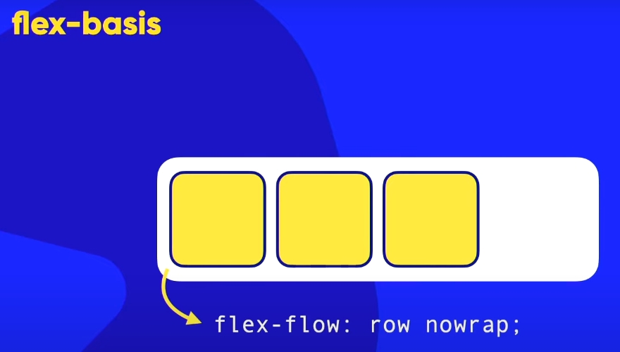
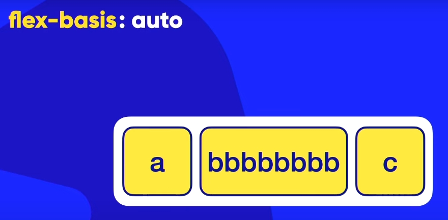
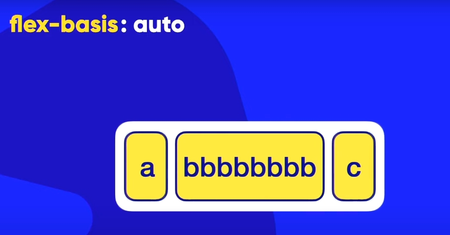
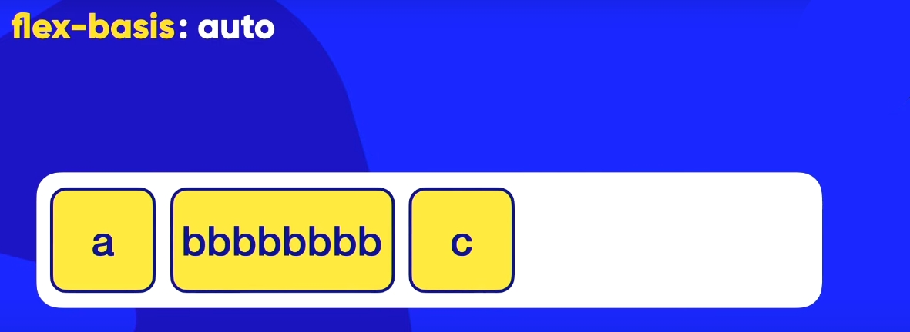
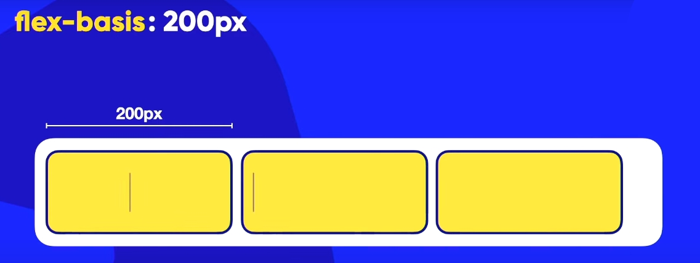
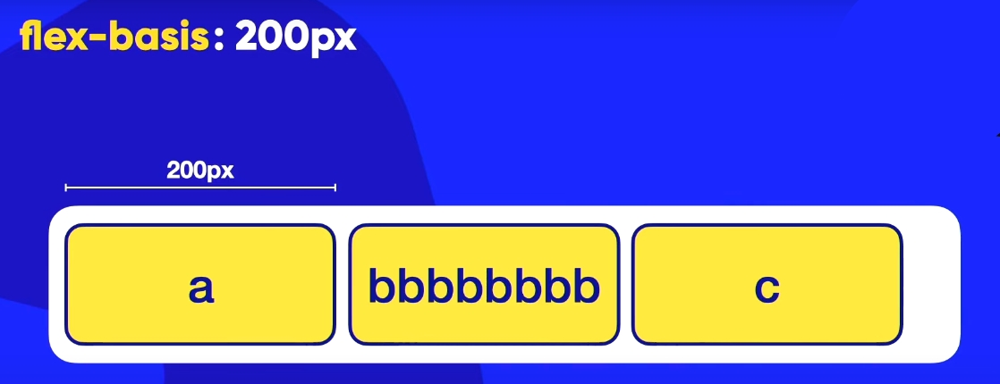
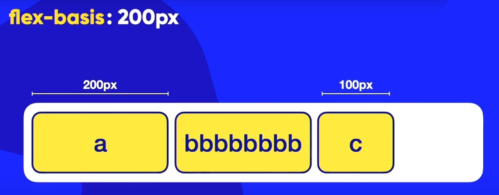

Aula 9
OBSERVAÇÃO:
"Diminua ou aumente a dimensão da página do navegador para ver as configurações funcionando na prática".
ABAIXO vemos o pai contêiner e os filhos itens:

ABAIXO vemos filhos itens:

ABAIXO vemos propriedades padrões do pai contêiner e "flex-basis" é a propriedade aplicada somente á filhos:

Comportamento padrão de <div>´s com "flex-box"
Podemos ver que as caixas (os itens) estão ocupando 100% da altura do conteiner; Sua largura é padrão, e sua cor de fundo sobrepõe do conteiner.
Display = flex, faz um item se posicionar um ao lado do outro.)
OBSERVAÇÃO:
Por padrão os [flex-itens] já vem com "flex-basis = auto".
ACIMA VEMOS O comportamento dos itens mediante o padrão da propriedade [flex-basis] onde seu valor = "auto" e com contéudo mínimo para não alterar o tamanho da caixa-filho.
Por padrão os [flex-itens] já vem com "flex-basis = auto" e se aumentamos o conteúdo dentro dos [flex-itens], então as caixas aumentam de tamanho mediante a proporção do conteúdo.
Os flex-itens aumentam sua dimensão conforme adicionamos conteúdo neles e faz o contêiner acompanhar a dimensão dos elementos.

Os flex-itens diminuem comforme diminui o contêiner.

Os flex-itens mentêm-se no tamanho padrão comforme aumentamos o contêiner.

A
Outro conteúdo
C
Conteúdo um pouco maior
E
Conteúdo mairo ainda, que vai ocaupar mais espaço.
G
ACIMA Observe os itens "B; D; e F
NOTE
O comportamento dos itens mediante o padrão da propriedade [flex-basis] onde seu valor = "auto" e com contéudo mais para alterar o tamanho da caixa-filho.
Se definirmos um valor de flex-basis para todos os [flex-itens] então o conteúdo dentro dos [flex-itens] vão quebrar para que a proporção da caixa se mantenha no valor definido.
Os flex-itens poder: Ter dimensão definida.

Os flex-itens: Se mantêm na dimensão se o conteúdo dentro deles crescerem.

Os flex-itens: podem ter valores específicos indivudualmente.

Os flex-itens: quebram o conteúdo e perde a dimensão definida quando o contêiner diminui de tamanho.

A
Outro conteúdo
C
Conteúdo um pouco maior
E
Conteúdo mairo ainda, que vai ocaupar mais espaço.
G
ACIMA Observe os itens "B; D; e F
NOTE
O comportamento dos itens mediante o valor da propriedade [flex-basis] onde seu valor = "150px" faz com que o contéudo quebre na direção do eixo transversal para não alterar o tamanho da caixa se esta estiver com valor inferior ao conteúdo e fazendo o valor de flex-basis ir pro espaço se diminuir o tamanho da tela do navegador.
Esse valor de flex-basis definido para todos os elementos serve mais para manter a proporção para telas maiores,
Já em telas muito pequenas não fica tão legal se travar um valor.
Se definirmos para o contêiner, o valor do "flex-wrap = wrap", isso fará com que os itens com flex-basis definido quebre no sentido do eixo principal para que seu conteúdo se mantenha dentro do valor flex-basis definido .
A
Outro conteúdo
C
Conteúdo um pouco maior
E
Conteúdo mairo ainda, que vai ocaupar mais espaço.
G
ACIMA Observe os itens "B; D; e F
NOTE
O comportamento dos itens mediante o valor da propriedade [flex-basis] onde seu valor = "150px" faz com que o contéudo quebre na direção do eixo transversal sem alterar a largura da caixa se esta estiver com valor inferior; Isso acontece porque o "flex-wrap" está com valor "wrap" definido para quebrar no sentido do eixo principal se o tamanho da tela do navegador diminuir.
Esse valor de flex-basis definido para todos os elementos serve mais para manter a proporção para telas maiores,
Já em telas muito pequenas não fica tão legal se travar um valor.